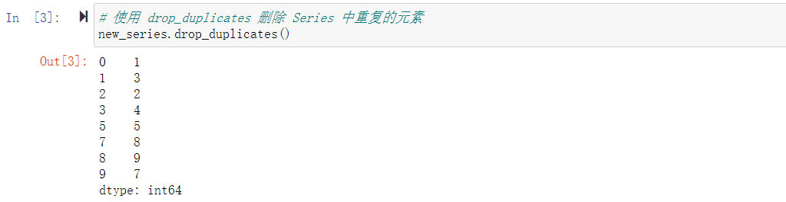
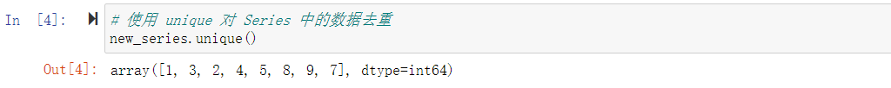
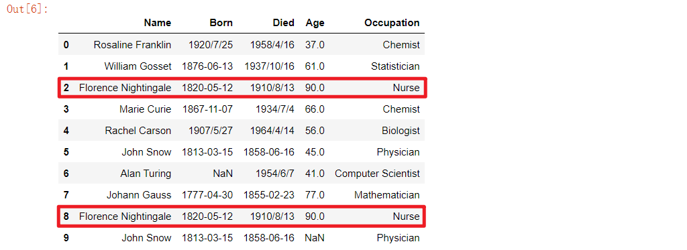
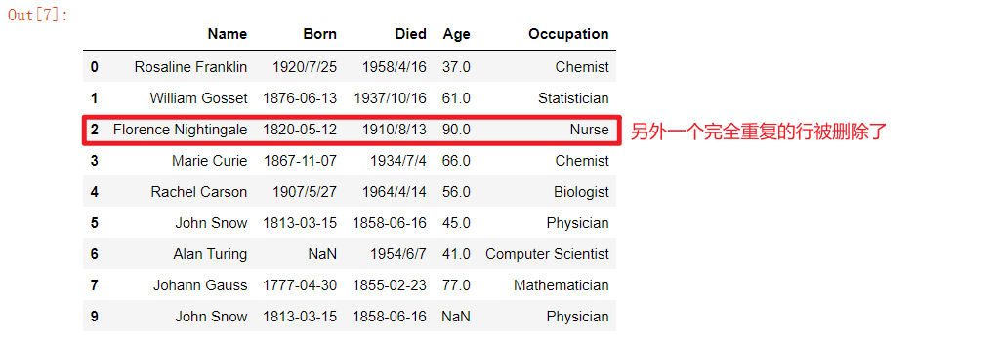

数据去重操作
学习目标
- 掌握数据去重操作
1. 数据去重操作
在进行数据清洗时，除了缺失值的处理，还应检查数据中是否存在业务含义相同的重复数据，如果存在，则应在数据清洗时删除重复的数据(只保留一行)。
1.1 Series 的去重操作
Series 去重有 2 种方式：
| 方法 | 说明 |
|---|---|
series.drop_duplicates(inplace=False) |
删除 Series 中重复的元素并返回一个新的 Series；inplace设置True，则会直接在原 Series 数据基础上删除重复的元素 |
series.unique() |
将 Series 中的元素去重，返回一个去重后的 ndarray 数据 |
1）创建一个包含重复元素的 Series 数据
# 创建一个 Series 数据
new_series = pd.Series([1, 3, 2, 4, 3, 5, 1, 8, 9, 7, 8])
new_series

2）删除 Series 数据中重复的元素
# 使用 drop_duplicates 删除 Series 中重复的元素
new_series.drop_duplicates()

# 使用 unique 对 Series 中的数据去重
new_series.unique()

1.2 DataFrame 的去重操作
| 方法 | 说明 |
|---|---|
df.drop_duplicates(subset=None, keep='first', inplace=False) |
删除 DataFrame 中重复的行并返回一个新的 DataFrame；nplace设置True，则会直接在原 DataFrame 数据基础上删除重复的行 |
其他参数说明：
- subset：默认为None，只删除每一列完全相同的重复行；subset可以设置列名，如：
subset=[列1, 列2, ...]，只要指定列的值相同，则认为就是重复的行 - keep='first'：删除重复行时默认保留重复行的第一个；设置为'last'，则保留重复行的最后一个
1）加载 scientists_duplicates.csv 数据集
scientists = pd.read_csv('./data/scientists_duplicates.csv')
scientists

2）删除 DataFrame 数据中完全重复的行
# 注意：此处是返回了一个新的 DataFrame，原 DataFrame 的数据并没有改变
scientists.drop_duplicates()

3）删除 DataFrame 数据中 Name、Born、Died 三列相同的行
# 删除指定列值相同的行
scientists.drop_duplicates(subset=['Name', 'Born', 'Died'])
2. 总结
- Series 删除重复的元素：drop_duplicates 或 unique
- DataFrame 删除重复的行：drop_duplicates